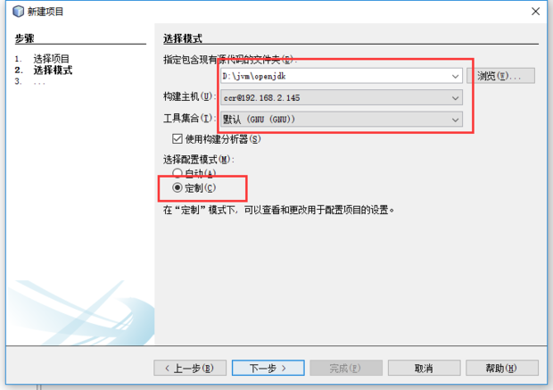

NetBeans远程开发
在开发linux下的C/C++程序的时候，不可避免的会遇到在windows下进行开发，而在linux上编译和调试的场景。常见的解决方式是在windows上安装一个linux虚拟机，然后在Linux上编写代码，编译和调试。如果虚拟机不装图形界面会导致开发效率低，而如果安装了图形界面又会大量的占用系统资源。安装无界面的linux虚拟机，同时使用NetBeans的远程开发功能在windows下进行开发，可以很好的解决这个问题。
需要了解NetBeans远程开发请参考：https://netbeans.org/kb/docs/cnd/remotedev-tutorial_zh_CN.html
众所周知，在windows上编译及调试openJDK极为复杂，会遇到各种各样的问题，而且网络上的教程很少且大部分是以前的版本。而在Linux上编译调试OpenJDK相对简单的多。利用这一点，读者可在windows上安装NetBeans，利用其远程开发的功能，实现在windows上使用Linux环境对OpenJdk进行调试。
准备Linux环境编译openJDK
既然是使用Linux环境，那Linux环境自然需要配置成能对OpenJdk进行编译。Linux环境编译OpenJDK网上已经有很多教程，在此只是简单的说下步骤
准备Linux环境。
我选择Ubuntu17版本在VirtualBox上安装，make版本原本是4.1版本，gcc和g++版本是6.3.0，但在编译过程中出现一些问题，后来将版本降至4.7，为了能实现远程调试，环境必须有GDB。bootjdk jdk7版本。
$ make -v
GNU Make 4.1
$ gcc -v
gcc version 4.7.4
$ g++ -v
gcc version 4.7.4
$ gdb -v
GNU gdb 7.12.50.20170314-git
获取OpenJDK源码。
这里我选择openjdk-8-src-b132-03_mar_2014.zip
配置config（预构建）
bash ./configure --with-debug-level=slowdebug --with-target-bits=64 --with-boot-jdk=/home/ccr/jdk1.7.0_80
在配置的过程中，会提示环境缺少的各种包，按照提示一次安装即可，在提示安装 libX11-dev依赖时，ubuntu怎么也安装不上，后来发现x大写了，改成小写就行了，配置完成后如下图：
make all(构建)
在构建时有可能遇到以下问题，解决方法也在下面：
在This OS is not supported:/openjdk/hotspot/make/linux/Makefile文件的228行，写明了该版本openJDK所支持的OS版本，通过uname -r命令查出系统的版本，添加到228行后面重新编译即可（make clean）。invalid option -- '/'
解决办法：删除66-67行之间的那段$ vim hotspot/make/linux/makefiles/adjust-mflags.sh 63 MFLAGS=` 64 echo "$MFLAGS" \ 65 | sed ' 66 s/^-/ -/ s/ -\([^ ][^ ]*\)j/ -\1 -j/ 67 s/ -j[0-9][0-9]*/ -j/ 68 s/ -j\([^ ]\)/ -j -\1/ 69 s/ -j/ -j'${HOTSPOT_BUILD_JOBS:-${default_build_jobs}}'/ 70 ' `invalid suffix on literal
这是因为gcc和g++版本过高导致，降低gcc版本至4.7.//1 安装 $ sudo apt-get install -y gcc-4.7 $ sudo apt-get install -y g++-4.7 //2 重新建立软连接 $ cd /usr/bin $ sudo rm -r gcc $ sudo ln -sf gcc-4.7 gcc $ sudo rm -r g++ $ sudo ln -sf g++-4.7 g++-Werror=deprecated-declarations
解决办法
构建完成后出现如下图所示内容，说明构建成功$ vim hotspot/make/linux/makefiles/gcc.make # Compiler warnings are treated as errors # WARNINGS_ARE_ERRORS = -Werror #注释这一行
远程调试一般有两种方式，一种是将本地源码通过windowsNetBeans构建调试sftp的方式复制到目标机器，目标机器进行编译后的结果在复制到本地，这种方式针对小型项目效果还是不错的，但是对OpenJDK这种大型项目，复制无疑是非常耗时的，有时还会出现异常。另一种方式是将windows的文件夹共享至网络中，linux通过mount命令将网络中的文件夹挂在至Linux系统，并且赋予读写和执行权限，这样windows和Linux就能共同操作统一文件夹。毫无疑问本教程使用第二种方式。创建文件夹
在D盘新建jvm文件夹（作为共享文件夹），将OpenJDK解压至该文件夹。安装NetBeans（我选择最新版本8.2）。分享文件夹
分享jvm文件夹。在windows上操作如下，选择一个账户进行共享，共享结束后，右键->属性，查看共享状态。挂载
在Linux上使用mount命令挂载
参数依次是资源文件夹的$ id ccr uid=1000(ccr) gid=1000(ccr) groups=1000(ccr) $ sudo mount //192.168.2.176/jvm /home/ccr/jvm/ -o username=ccr,password=ccr,gid=1000,uid=1000IP和文件夹，挂载到目标机器的目录（必须先创建），username文件夹共享的windows账户，password密码，gid和uid是控制挂载后控制该目录的所有者，可以通过id username来获取。挂载成功后使用ll命令到jvm文件夹查看结果。
打开NetBeans构建主机。NetBeans，窗口->服务->右键c\c++构建主机 添加主机。填写目标机器的IP及操作用户（Linux上必须安装ssh），我这里使用ccr用户。 最后项目文件的访问方式一定要选择【系统级别文件共享（NFS,Samba等）】，添加主机后 位主机设置路径映射。NetBeans构建项目。- 文件->新建项目，选择，
c/c++，基于现有源代码的c/c++项目 - 选择
openJdk目录，选择构建的主机，选择定制
 - 写上预定以参数，这个参数和之前编译时的参数一直就行了
./configure --with-debug-level=slowdebug --with-target-bits=64 --with-boot-jdk=/home/ccr/jdk1.7.0_80 - 一直点下一步，直到最后一步，项目名称改成
openjdk8u - 点击完成后，项目开始配置和构建，在构建过程中遇到的问题，可以参考上面的编译过程去解决，然后重新清理和构建，直到构建成功为止。构建大概30分钟。
错误处理
构建过程中出现错误。failed to create symbolic link： Operation not supported
因为由windows共享的方式，在Linux上挂载时使用的cifs文件系统，可以用df -T来查看，而cifs文件系统是创建不了软连接的（symbolic link），所以windows的共享方式需要改成NFS的方式（读者可以先去了解HFS和cifs的区别）。windows要想通过nfs的方式共享文件，需要安装nfs服务，这里我选择用haneWin NFS。下载和文档链接如下：
https://www.hanewin.net/nfs-e.htm
https://www.hanewin.net/doc/nfs/nfsd.htm
软件需要破解，可在网上找到注册机。下图是配置图。
上面的参数中-mappall:1000:1000 -exec是必须的为客户端设置文件夹所属账户以及执行权限，设置完成后重启服务（如果是最新版本直接点击重启服务是可以的，或者到windows的服务管理重启）
重启后可在命令行中showcount -e进行查看。
客户端挂载
最后运行成功//先安装nfs客户端在挂载，原来的挂载取消 $ sudo apt-get install nfs-common $ sudo mount -t nfs 192.168.2.176:/jvm /home/ccr/jvm/ //挂载成功后，进入目录测试一下能否创建软连接 $ touch foo --创建文件 $ ln -s bar fooNetBeans运行项目。 - 准备
Hello World class文件（很简单的javaHelloWorld，用openjdk编译好的javac去编译，或者用该版本以下版本去编译。），放到共享文件夹内。我的放在jvm/javatest目录下。 - 右键项目->属性->运行->编辑运行命令->输入类路径和类名

- 好了现在可以运行项目了，点击运行->运行项目，
netbeans会询问你用什么可执行文件来运行，选择java即可
运行结果如下：NetBeans调试项目。
System.out.println(...)实际上调用的是jdk/src/share/native/java/io/io_util.c文件中的writeBytes方法，定位到这个方法打上断点。点击调试项目，如果出现SIGSEGV警告，忽略往前继续。最终执行到改断点，你就能看到jvm正在干什么。总结
好了，以上就是利用NetBeans远程开发和Linux虚拟机进行的OpenJDK的构建和调试。构建过程中有很多错误，读者要有耐心，利用虚拟机的快照功能对虚拟机进行备份。尽量参考官方的文档。